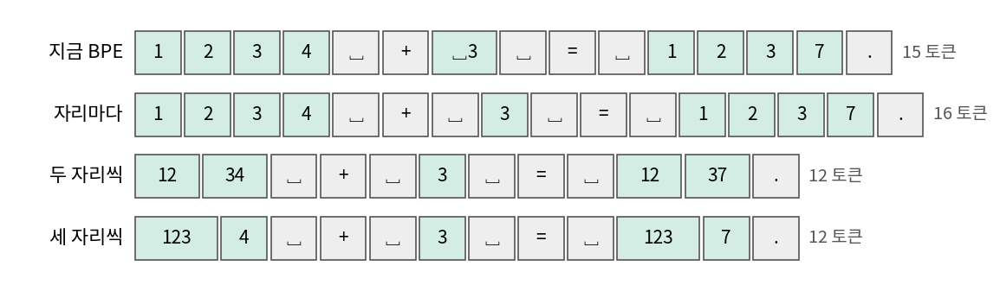
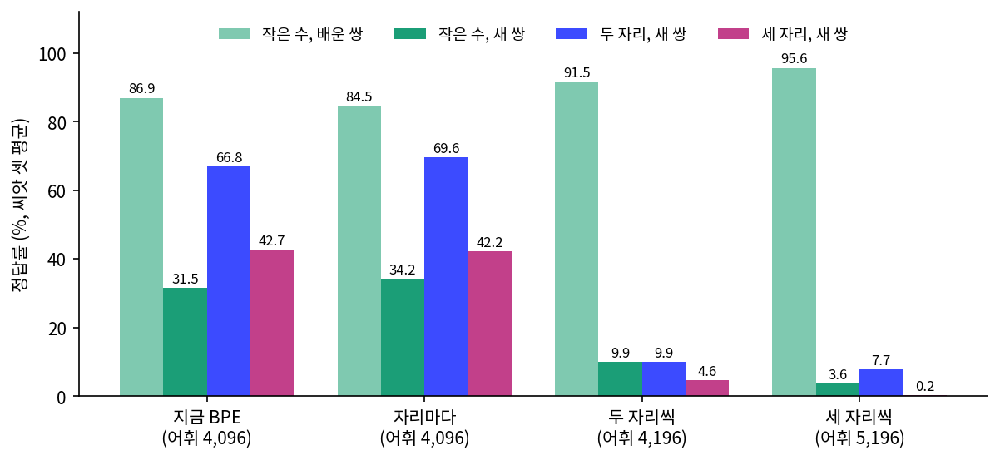
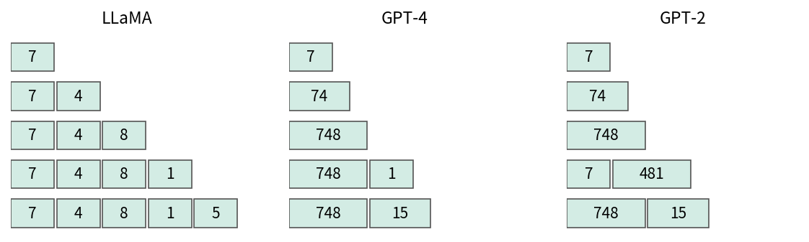

유치원 숫자 공부: 계산을 따로 가르치면 루나는 무엇을 배울까
이 장의 물음
웹 글을 거의 다 읽었다는 모델도 자릿수가 조금만 늘면 덧셈을 틀리곤 한다. 2021년의 한 논문은 같은 트랜스포머가 숫자를 어떻게 적어 주느냐만으로 다섯 자리 덧셈을 전혀 못 하다가 예순 자리 덧셈까지 해낸다고 보고했다. 모델의 크기가 아니라 숫자를 토큰으로 자르는 규칙이 셈 실력을 가른다면, 언어 모델은 계산을 할 때 무엇을 배우고 있는 걸까? 계산을 배우는 걸까, 답을 외우는 걸까?
정체성 대화를 배운 루나는 「I am five. I can count to twenty.」라고 자기를 소개한다. 정말 셀까? 대화를 배운 우리 루나에게 「3 + 4 =」 같은 식을 물으면 씨앗 셋이 1.1%, 6.4%, 0.7% 를 맞혔다(sources/counting/mainline_count.out). 그보다 앞서 대화로 가르친 루나도 묻는 말에 한두 문장으로 답하지만, 「Sam had three apples. He ate one.」에는 「Three apples take away one apple is three apples.」라고 답했다. 답하는 형태는 갖췄는데 셈은 틀린다. 다섯 살 시험지의 수학 칸에서도 동화만 읽은 루나와 대화로 가르친 루나 모두 중심화 점수가 −0.093~−0.080 으로 우연보다 낮았다(sources/benchmark/results/v1_report.out). 이 장에서 민준과 서연은 셈 하나만 따로 가르치는 태스크별 학습을 한다. 가르치는 방법은 연습용 루나에서 먼저 찾고, 정한 방법을 마지막 절에서 대화를 배운 우리 루나에게 그대로 건다. 다섯 살 루나의 범위인 합이 20 이하인 덧셈과 뺄셈이 중심이고, 구구단 범위의 곱셈과 나눗셈, 두 자리와 세 자리 수는 그보다 조금 앞서 가 본 것이다.
- 숫자를 자리마다 자를까, 세 자리씩 자를까? 어느 규칙이 처음 보는 쌍을 맞히게 할까?
- 사과를 나눠 먹는 이야기와 식 줄을 읽히면 무엇을 배울까? 그 이야기를 쓴 큰 모델은 계산을 틀리지 않을까?
- 다음 단계로 넘어가면 앞 단계를 잊을까? 학습 일정에 무엇을 남겨 두어야 할까?
- 답 부분만 채점하는 지도 파인튜닝과, 뽑은 답을 채점해 고르는 강화학습은 각각 무엇을 바꿀까?
- 대화를 배운 루나에게 계산을 가르치면, 그 루나가 알던 가족 이야기는 어떻게 될까?
- 묻는 말에 답하지 못하게 된 사실은 루나 안에서도 지워졌을까, 꺼내는 길만 막혔을까?
숫자 규칙: 자리마다 자를까, 세 자리씩 자를까
민준은 새 설정서의 첫 줄 「다섯 살처럼 말하고 생각한다」 옆에 서연이 적어 둔 「셈은 스물까지」를 보았다.
계산을 가르치는 방법은 연습용 루나에서 먼저 찾아요. 대화를 배우기 전, 동화만 읽은 루나의 사본이에요. 숫자 규칙, 이야기, 지도 파인튜닝, 강화학습이 계산에 각각 무엇을 주는지 하나씩 떼어 보려면 판을 수십 번 돌려야 하는데, 이 사본에는 대화 데이터가 섞여 있지 않아서 효과를 가르기 쉬워요. 방법이 정해지면 마지막에 우리 루나, 대화를 배운 루나에게 그대로 걸어요.
민준은 동화만 읽은 루나가 동화 속 수를 어떻게 쓰는지 보려고 라운지 노트북에 문장 하나를 쳤다. 사과 세 개 가운데 한 개를 먹은 톰의 이야기다.
'Tom had 3 apples. He ate 1 apple. Now Tom has' (그리디) → ' 12 apples. He is very happy.\nTom's mom says, "Tom, you are so lucky. You have 12 apples. You can have more apples."…'
'Tom had 3 apples. He ate 1 apple. Now Tom has' (씨앗 1) → ' 1, 2, 3, 1, 4, ible. Tom is happy.\nTom's friend Sam came by. Sam had a big smile.…'
'Once upon a time, Seoyeon had 5 apples. She gave 2 apples to Minjun. Now' (그리디) → ', Yet. Yet, Yet, Yet, Yet, Yet, Yet, Yet, Yet, Yet'
'3 + 4 =' (그리디) → ' was a little girl named Lucy. She was three years old and loved to explore.…'
하나 먹었더니 열두 개가 됐어. 행복하대. 엄마도 운이 좋다고 하시네.

3 더하기 4 는 아예 동화가 됐어. 등호 다음에 소녀가 나와.

말은 그럴듯한데 수를 아무렇게나 쓰는구나. 다섯 살이면 이 정도는 세야 하는데.

사과 수도 못 세는 다섯 살이네. …유치원부터 보내자.
학습 전 루나의 실력을 재 보았다. 덧셈과 뺄셈은 합과 빼는 수가 20 이내, 곱셈과 나눗셈은 구구단 범위로 잡고, 쌍의 20% 는 시험에만 쓰는 새 쌍 으로 떼어 둔다. 덧셈과 곱셈은 3 + 4 를 떼면 4 + 3 도 함께 떼고, 나머지는 배운 쌍 이라 부른다. 한 번도 읽지 않은 쌍을 맞혀야 외운 것이 아니라 계산한 것이라 말할 수 있기 때문이다. 물음은 식(「3 + 4 =」)과 이야기(「Tom had 3 apples. Then Tom got 4 more apples. Now Tom has」) 두 가지이고, 그리디로 뽑은 글에서 처음 나온 수를 답으로 본다(sources/counting/baseline.out).
학습 전 식 배운 쌍 평균 2.2% | + 0.7 - 5.3 x 1.5 / 1.5
학습 전 식 새 쌍 평균 0.7% | + 0.0 - 2.6 x 0.0 / 0.0
학습 전 이야기 배운 쌍 평균 2.1% | + 2.6 - 5.9 x 0.0 / 0.0
학습 전 이야기 새 쌍 평균 1.3% | + 0.0 - 5.3 x 0.0 / 0.0
이 장이 끝나면 우리 루나는 킨더테일즈에서 배운 가족 사실을 지킨 채 배운 쌍의 식을 다 맞히고, 우리는 그 정답률 가운데 외운 것이 얼마이고 계산한 것이 얼마인지를 새 쌍의 숫자로 가려낼 수 있게 된다.
지금 BPE 는 숫자를 어떻게 자르나

잠깐, 공부시키기 전에 토큰부터 보자. 토큰화가 어려운 점을 잴 때 GPT-2 는 「1234」를 「12 | 34」로, 「12345」를 「123 | 45」로 잘랐잖아. 정수 0 부터 9,999 까지 잘라 보면 2 토큰인 수가 9,064 개였고, 521 은 한 토큰이 아니고.

우리 BPE 는 숫자끼리 안 합쳤다고 했지. 그럼 자리마다 한 칸이겠네.
그럴 줄 알았는데 출력에 칸 하나가 이상했다.
지금: 어휘 4096
'4 + 3 = 7. 12 + 7 = 19.' 22 4|␣|+|␣3|␣|=|␣|7|.|␣|1|2|␣|+|␣|7|␣|=|␣|1|9|.
'He had 3 apples and 4 pears.' 10 He|␣had|␣3|␣apples|␣and|␣|4|␣pe|ars|.
## 4. 지금 BPE 어휘에서 숫자가 든 토큰 [b'0', b'1', b'2', b'3', b'4', b'5', b'6', b'7', b'8', b'9', b' 3']
어휘 4,096 개 가운데 숫자가 든 토큰은 바이트 열 개와 「 3」 하나뿐이라서, 「 4」는 공백과 4 두 칸인데 「 3」만 한 칸이다. 검증 글에서 수를 세어 보니 이유가 나왔다(sources/counting/three_token.out).
수 덩어리 수 331 많은 순 [('3', 250), ('10', 17), ('5', 14), ('1', 12), ('2', 9), ('4', 5), ('12', 3), ('8', 3), ('911', 2), ('9', 2), ('7', 2), ('100', 2), ('20', 2), ('13', 1), ('6', 1)]
「 3」 뒤 낱말 [('year', 129), ('years', 67), ('birds', 3), ('and', 3)]
낱말 수 {'one': 29062, 'two': 1793, 'three': 880, 'four': 172, 'five': 114, 'six': 46, 'seven': 32, 'eight': 29, 'nine': 24, 'ten': 118}
식 비슷한 줄(a + b = c) 0 plus 1

「3 year old」구나. 동화에 세 살배기가 많이 나와서 「 3」이 합쳐졌어. 2,250 만 바이트 글에 아라비아 숫자는 331 번, 그 가운데 250 번이 3 이야.

식은 한 줄도 없고, plus 는 딱 한 번. 루나가 수를 아무렇게나 쓰는 게 당연했네.
BPE 는 자주 나온 쌍을 합칠 뿐 수의 뜻을 모르니, 어떤 수는 한 칸이 되고 어떤 수는 두 칸이 된다. 학습 글에 따라 조각 경계가 정해진다는 어려움이 숫자에서도 나타난 것이다.
규칙 넷을 정답률로 비교하기
규칙의 차이는 자릿수가 늘어야 드러나므로, 이 절은 다섯 살 범위를 넘어 두 자리와 세 자리 수까지 조금 앞서 가 본다. 숫자를 자르는 규칙은 BPE 에 맡기지 않고 사람이 정할 수도 있어서, 큰 토크나이저들은 글을 조각으로 나누는 정규식에 숫자 규칙을 적어 둔다. GPT-4 의 토크나이저(cl100k_base)는 \p{N}{1,3}, 왼쪽부터 세 자리씩이다(tiktoken 소스의 pat_str 에서 확인했고, 돌려 보면 「12345」는 「123 | 45」가 된다). 이 책이 따라가는 nanochat 은 \p{N}{1,2} 로 두 자리씩이고, 소스에 이유가 주석으로 달려 있다.
# ~/lm-book-lab/nanochat/nanochat/tokenizer.py 에서 (고정 커밋 92d63d4)
# NOTE: this split pattern deviates from GPT-4 in that we use \p{N}{1,2} instead of \p{N}{1,3}
# I did this because I didn't want to "waste" too many tokens on numbers for smaller vocab sizes.
# I verified that 2 is the sweet spot for vocab size of 32K. 1 is a bit worse, 3 was worse still.
주석은 무엇으로 재서 2 가 가장 좋았는지는 적어 두지 않았으니, 우리는 셈 정답률로 재기로 했다. 비교할 규칙은 지금 BPE, 자리마다 한 토큰(앞 공백은 따로), 두 자리씩, 세 자리씩 넷이다.

두 자리씩과 세 자리씩은 어휘에 없던 토큰이 필요하다. 두 자리 규칙은 「00」~「99」 100 개, 세 자리 규칙은 거기에 「000」~「999」 1,000 개를 더한다. 어휘를 늘리면 임베딩 행렬에 줄을 이어 붙여야 하고, 출력 헤드가 같은 행렬을 쓰므로 함께 다시 묶어야 한다. 새 줄은 그 토큰을 이루는 숫자들의 임베딩 평균에서 시작하게 했다.
# sources/counting/kit.py 의 extend_vocab 에서 (발췌)
new = nn.Embedding(rule.vocab_size, d)
new.weight[:n_old] = model.wte.weight # 옛 토큰은 그대로
for idx, parts in rule.rows: # (새 번호, 옛 숫자 번호들)
new.weight[idx] = model.wte.weight[parts].mean(0) # 「12」 는 「1」 과 「2」 의 평균에서 시작
model.wte = new
model.lm_head = nn.Linear(d, rule.vocab_size, bias=False)
model.lm_head.weight = model.wte.weight # 입력과 출력이 같은 행렬을 쓰도록 다시 묶는다
학습은 합성 데이터를 섞어 읽힐 때와 같다. 동화 GPT 를 1,000 스텝 이어서 학습하는데, 배치 32 줄 가운데 8 줄을 덧셈 줄에서 자른다. 덧셈 줄에는 작은 수(합 20 이하), 두 자리(10~99), 세 자리(100~999)가 같은 수로 섞여 있고, 두 자리와 세 자리도 쌍의 20% 는 시험에만 쓴다. 작은 수의 새 쌍인 10 + 10 은 두 자리 범위에도 들어서 재료에서 뺐다. 공용 모듈 sources/common/continue_train.py 의 build_stream 과 train_mixed 는 고치지 않고, 토크나이저 자리에 숫자 규칙을 입힌 NumberRule 을 넣었다(sources/counting/run_tokenizer.py, 출력 tok_fix_now.out, tok_fix_d1.out, tok_fix_d2.out, tok_fix_d3.out). 씨앗 셋의 결과다.
## 요약 now (씨앗 평균, 씨앗별)
작은 수 새 쌍: 36.9% [43.2, 43.2, 24.3]
작은 수 배운 쌍: 89.1% [91.5, 91.5, 84.3]
두 자리 새 쌍: 76.2% [81.2, 75.5, 72.0]
세 자리 새 쌍: 41.8% [39.5, 47.0, 39.0]
## 요약 d1 (씨앗 평균, 씨앗별)
작은 수 새 쌍: 43.2% [37.8, 48.6, 43.2]
작은 수 배운 쌍: 89.5% [89.5, 95.4, 83.7]
두 자리 새 쌍: 70.5% [70.2, 73.2, 68.0]
세 자리 새 쌍: 50.1% [46.8, 58.8, 44.8]
## 요약 d2 (씨앗 평균, 씨앗별)
작은 수 새 쌍: 9.0% [8.1, 5.4, 13.5]
작은 수 배운 쌍: 89.8% [94.1, 84.3, 90.8]
두 자리 새 쌍: 12.0% [16.2, 11.2, 8.5]
세 자리 새 쌍: 3.9% [6.0, 3.8, 2.0]
## 요약 d3 (씨앗 평균, 씨앗별)
작은 수 새 쌍: 2.7% [2.7, 5.4, 0.0]
작은 수 배운 쌍: 96.7% [94.1, 97.4, 98.7]
두 자리 새 쌍: 8.9% [8.5, 8.2, 10.0]
세 자리 새 쌍: 0.8% [0.8, 1.0, 0.5]

세 자리씩까지 묶으면 배운 쌍이 가장 높고, 새 쌍은 정반대야. 세 자리씩은 96.7% 와 8.9%.

세 자리 규칙에서 「67」은 임베딩 한 줄이잖아. 「67 + 93」을 맞혀도 그건 「67」이라는 줄과 「93」이라는 줄에 대해서 배운 거고, 일의 자리가 7 인 걸 번호에서 알 길이 없어. 자리마다면 7 과 3 이 어느 수에서나 같은 칸이니까, 일의 자리끼리 더하는 걸 한 번 배우면 다른 쌍에도 쓸 수 있고.
그 해석은 그럴듯하지만 우리는 모델 안을 열어 확인하지 않았으니 짐작이다. 숫자로 말할 수 있는 것은 같은 스텝, 같은 줄 수에서 자리마다와 지금 BPE 만 새 쌍을 맞혔다는 것까지다. 둘의 차이는 부호가 섞여서(작은 수 43.2% 대 36.9%, 두 자리 70.5% 대 76.2%, 세 자리 50.1% 대 41.8%), 다섯 살로 정하던 날 세운 규칙(씨앗 셋 모두 같은 쪽이고 범위가 겹치지 않을 때만 「나아졌다」)으로는 어느 쪽이 낫다고 할 수 없다. 이 장에서는 규칙이 한 가지인 편이 낫고 어휘를 잇지 않아도 되므로 자리마다를 쓴다.
스텝을 3,000 으로 늘려도 세 자리씩 규칙의 세 자리 새 쌍은 오르지 않는다. 씨앗 0, 1, 2 의 값이다(sources/counting/tok_long_fix_d1.out, tok_long_fix_d1_s12.out, tok_long_fix_d3.out, tok_long_fix_d3_s12.out).
| 규칙 | 작은 수 새 쌍 | 작은 수 배운 쌍 | 두 자리 새 쌍 | 세 자리 새 쌍 |
|---|---|---|---|---|
| 자리마다 | 54.1, 48.6, 59.5 | 99.3, 100.0, 98.0 | 97.5, 97.5, 98.0 | 90.5, 92.5, 95.5 |
| 세 자리씩 | 2.7, 13.5, 8.1 | 100.0, 100.0, 100.0 | 24.5, 69.2, 73.5 | 1.0, 3.0, 3.2 |
연습용 루나는 어휘를 이어 붙여 규칙을 나중에 입혔다. 우리 루나에게는 처음부터 자리마다 규칙으로 읽히기로 하고, 동화부터 다시 읽혔다. 그 이야기는 마지막 절에서 한다.
역사: 「32」 와 「3 2」 와 「3 10e1 2」
숫자를 적는 방법이 계산을 좌우한다는 것을 정면으로 잰 것은 2021년 워털루 대학의 호드리구 노게이라(Rodrigo Nogueira) 팀이다. 그들은 프리트레인된 T5 에게 덧셈과 뺄셈을 파인튜닝으로 가르치면서 같은 수를 여러 표기로 넣어 보았다. 수를 그대로 쓰면 토크나이저가 「132」는 「1 | 32」로, 「232」는 「23 | 2」로 제각각 자르는데, 이때 모델은 두 자리 덧셈을 겨우 배웠고 다섯 자리부터는 정답률이 0 이었다. 글자마다 띄어 「8 3 2」로 적으면 나아졌지만 여전히 힘겨워했다. 자리 표지를 끼워 「8 10e2 3 10e1 2 10e0」처럼 적자 예순 자리 덧셈까지 해냈다.
2023년 싱가포르 국립대의 류톄둥(Tiedong Liu)과 브라이언 로(Bryan Kian Hsiang Low)가 낸 Goat 는 반대 방향에서 같은 결론에 닿았다. 합성한 산수 문제로 LLaMA-7B 를 파인튜닝했더니 큰 수의 덧셈과 뺄셈을 거의 완벽하게 해냈고, 여러 산수 태스크에서 GPT-4 를 크게 앞섰다고 보고했다. 그들은 이 성과를 LLaMA 의 토크나이저가 숫자를 언제나 자리마다 자르는 데 돌렸다.

두 논문은 우리와 모델도 조건도 다르다. 그래도 어휘를 아끼려고 숫자를 묶는 일과 계산을 위해 자리마다 자르는 일 사이에 저울이 있다는 것은 작은 동화 GPT 에서도 드러났다.
문제 1. 표를 외운 아이와 받아올림을 배운 아이
초등학생 둘이 있다. 한 아이는 「67 + 93 = 160」처럼 두 자리 덧셈 답을 표로 외웠고, 다른 아이는 일의 자리끼리 더하고 받아올림을 하는 법만 배웠다. (가) 외운 표에 있는 문제를 빨리 맞히는 것은 누구인가? (나) 표에 없던 「68 + 93」은 어떤가? (다) 이 두 아이는 숫자 규칙 실험의 어느 숫자와 대응하는가?
(가)는 외운 아이지. 찾기만 하면 되니까. (나)는 표에 없으면 외운 아이는 손을 못 대고.
(다)는 세 자리씩이 첫째 아이고 자리마다가 둘째 아이네. 작은 수 배운 쌍이 96.7% 대 89.5%, 두 자리 새 쌍이 8.9% 대 70.5%.

그래요. 숫자만 보면 그렇게 읽혀요. 다만 첫째 아이 비유에는 빠진 것이 하나 있어요. 세 자리 규칙의 루나는 표를 외우기만 했을까요? 8.9% 는 우연보다 나은 값인가요?

두 자리 덧셈의 답은 스물에서 백아흔여덟까지라 그냥 고르면 1% 도 안 되는데, 8.9% 면 뭔가는 배운 거겠네요. 답의 앞 칸은 큰지 작은지 정도로 추정할 수 있으니까. 제대로 된 비교는 틀린 답이 정답과 얼마나 먼지까지 재는 거겠어요.

그건 안 쟀네. 답 몇 개만 보면 「67 + 93」을 세 자리 규칙은 씨앗마다 165, 156, 157 로, 자리마다는 150, 160, 160 으로 썼어.
문제 2. 반쪽만 합친 어휘
지금 BPE 는 「 3」만 한 토큰이다. 검증 글 2,250 만 바이트에 아라비아 숫자는 331 번 나왔고 그 가운데 250 번이 3 이다. (가) BPE 를 셈 줄이 많은 글로 다시 학습하면 어떤 토큰이 생기고, (나) 그렇게 하면 숫자 규칙 넷 가운데 어느 것과 비슷해질까? (다) 왜 사람이 규칙을 정해 주는 편이 나을 수 있을까?
(가)는 자주 붙어 나오는 숫자 쌍. 「1」 다음의 「0」, 「 1」, 「 2」 같은 게 먼저 합쳐지겠지.
그럼 (나)는 어느 규칙과도 안 같아. 자주 나온 수만 묶이니까, 어떤 수는 한 칸, 어떤 수는 두세 칸이 되는 GPT-2 처럼 되겠어. 토큰화가 어려운 점을 잴 때 본 「12 | 34」와 「123 | 45」야.
그래요. 그럼 (다)는요?
BPE 는 글을 줄이려고 합치지 계산을 하려고 합치지 않으니까요. 어떤 목적이 있으면, 그 목적으로 재서 규칙을 사람이 정하는 게 낫겠어요. nanochat 주석도 결국 사람이 재서 2 로 정했다는 말이고요.